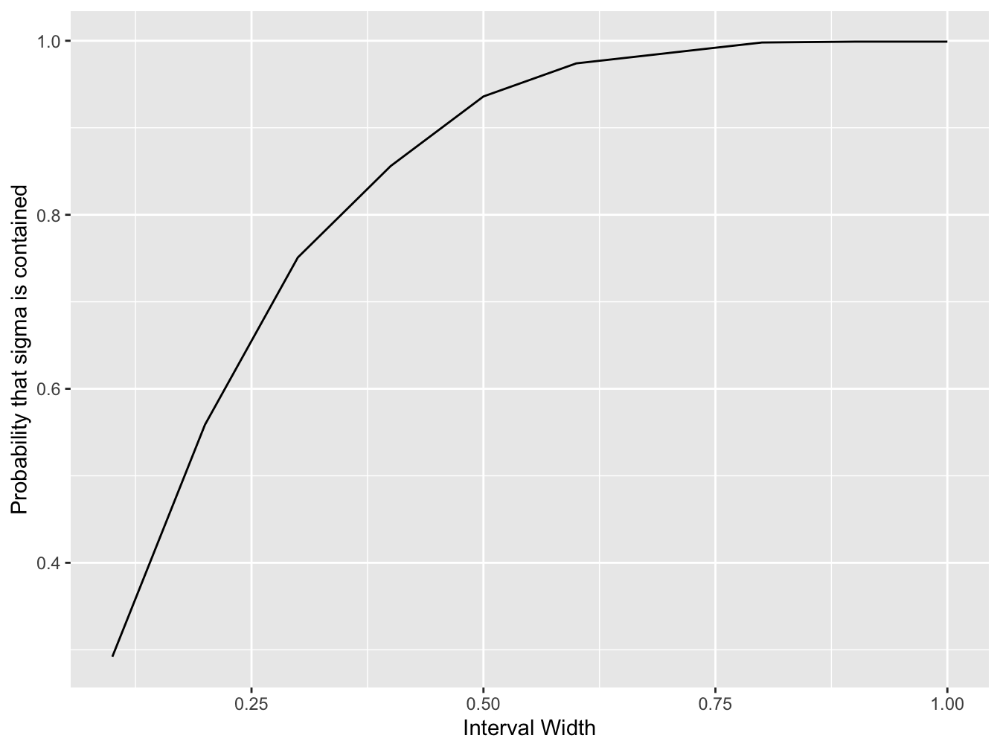
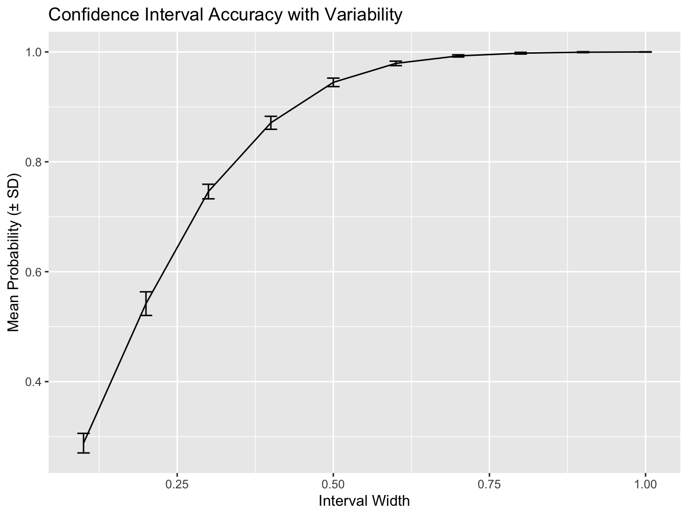

F Solution: Confidence Interval
Can you devise a way to compute a confidence interval for the population standard deviation?
You can make use of the following as a point estimate of the sample variance:
\[ s^2 = \frac{1}{n - 1}\sum_{i = 1}^n (x - \bar{x})^2 \]
which can be calculated using the sd function in R, remember the relationship between the standard deviation and variance.
F.1 Function Definitions
First, let’s define the functions that will be used for the confidence interval analysis:
# Function to simulate confidence intervals for standard deviation
simulate_confidence_intervals <- function(
sample_size, n_repeats, interval_widths, population_mean = 2.5,
population_sd = 1.0) {
# Initialize storage for results
n_interval_widths <- length(interval_widths)
sigma_contained <- rep(0, n_interval_widths)
# Run Monte Carlo simulations
for (replicate in 1:n_repeats) {
# Generate sample data
x <- rnorm(sample_size, mean = population_mean, sd = population_sd)
# Compute sample standard deviation
sample_sd <- sd(x)
# Test each interval width
for (j in 1:n_interval_widths) {
# Check if interval contains the true standard deviation
lower_bound <- sample_sd - 0.5 * interval_widths[j]
upper_bound <- sample_sd + 0.5 * interval_widths[j]
if ((population_sd > lower_bound) && (population_sd < upper_bound)) {
sigma_contained[j] <- sigma_contained[j] + 1
}
}
}
# Calculate probabilities
probabilities <- sigma_contained / n_repeats
return(list(
interval_widths = interval_widths,
probabilities = probabilities,
counts = sigma_contained
))
}
# Function to analyze confidence interval accuracy with multiple runs
analyze_ci_accuracy <- function(sample_size, n_repeats, interval_widths,
n_runs = 10, population_mean = 2.5, population_sd = 1.0) {
# Storage for results from multiple runs
all_probabilities <- matrix(0, nrow = n_runs, ncol = length(interval_widths))
# Run the simulation multiple times to assess variability
for (run in 1:n_runs) {
result <- simulate_confidence_intervals(sample_size, n_repeats, interval_widths,
population_mean, population_sd)
all_probabilities[run, ] <- result$probabilities
}
# Calculate mean and standard deviation for each interval width
mean_accuracy <- colMeans(all_probabilities)
sd_accuracy <- apply(all_probabilities, 2, sd)
return(list(
interval_widths = interval_widths,
mean_accuracy = mean_accuracy,
sd_accuracy = sd_accuracy,
all_probabilities = all_probabilities
))
}F.2 Main Analysis
Now we’ll use these functions to perform the confidence interval analysis:
## Define parameters
n <- 30 # sample size
mu <- 2.5 # population mean
sigma <- 1.0 # population standard deviation
nreps <- 1000 # number of Monte Carlo simulation runs
interval_width <- seq(0.1, 1.0, 0.1) # interval widths to test
# Run the simulation
results <- simulate_confidence_intervals(
sample_size = n,
n_repeats = nreps,
interval_widths = interval_width,
population_mean = mu,
population_sd = sigma
)
probability_var_contained <- results$probabilities
# create a data frame containing the variables we wish to plot
df <- data.frame(interval_width = results$interval_widths,
probability_var_contained = probability_var_contained)
# initialise the ggplot
plt <- ggplot(df, aes(x = interval_width, y = probability_var_contained))
# create a line plot
plt <- plt + geom_line()
# add a horizontal axis label
plt <- plt + xlab("Interval Width")
# create a vertical axis label
plt <- plt + ylab("Probability that sigma is contained")
# plot to screen
print(plt)
#> interval_width probability_var_contained
#> 1 0.1 0.286
#> 2 0.2 0.549
#> 3 0.3 0.753
#> 4 0.4 0.875
#> 5 0.5 0.943
#> 6 0.6 0.975
#> 7 0.7 0.992
#> 8 0.8 0.999
#> 9 0.9 1.000
#> 10 1.0 1.000F.3 Advanced Analysis with Accuracy Assessment
Let’s also analyze the variability in our confidence interval estimates:
# Analyze accuracy with multiple runs
accuracy_results <- analyze_ci_accuracy(
sample_size = n,
n_repeats = nreps,
interval_widths = interval_width,
n_runs = 10,
population_mean = mu,
population_sd = sigma
)
# Create summary table
summary_df <- data.frame(
interval_width = accuracy_results$interval_widths,
mean_accuracy = accuracy_results$mean_accuracy,
sd_accuracy = accuracy_results$sd_accuracy
)
print("Summary of Confidence Interval Accuracy:")#> [1] "Summary of Confidence Interval Accuracy:"#> interval_width mean_accuracy sd_accuracy
#> 1 0.1 0.2880 0.0178200885
#> 2 0.2 0.5419 0.0214809994
#> 3 0.3 0.7459 0.0132535111
#> 4 0.4 0.8710 0.0118321596
#> 5 0.5 0.9446 0.0077201036
#> 6 0.6 0.9791 0.0040674863
#> 7 0.7 0.9927 0.0020027759
#> 8 0.8 0.9977 0.0016363917
#> 9 0.9 0.9995 0.0008498366
#> 10 1.0 0.9999 0.0003162278# Plot mean accuracy with error bars
plt_accuracy <- ggplot(summary_df, aes(x = interval_width, y = mean_accuracy))
plt_accuracy <- plt_accuracy + geom_line()
plt_accuracy <- plt_accuracy + geom_errorbar(aes(ymin = mean_accuracy - sd_accuracy,
ymax = mean_accuracy + sd_accuracy),
width = 0.02)
plt_accuracy <- plt_accuracy + xlab("Interval Width")
plt_accuracy <- plt_accuracy + ylab("Mean Probability (± SD)")
plt_accuracy <- plt_accuracy + ggtitle("Confidence Interval Accuracy with Variability")
print(plt_accuracy)
```